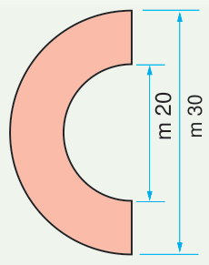
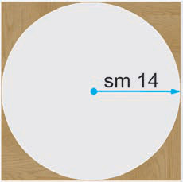

Zoezi la marudio
Katika umbo lifuatalo:
(a) tafuta mzingo wake
(b) tafuta eneo lake

m 20m 30Mzingo wa umbo la robo duara ni sm 50.
Tafuta eneo lake.
Ikiwa kipenyo cha duara ni sm 7, tafuta eneo la duara hilo.
Tumia π = 3.14
Mwanafunzi anapima sahani na kupata kipenyo cha sm 20.
Tafuta mzingo wake.
Ikiwa mzingo wa gurudumu ni sm 62.8, tafuta kipenyo chake.
Tumia π = 3.14.
Ikiwa James ana sahani ya duara yenye kipenyo cha sm 12.
Tafuta urefu wa nusu kipenyo cha sahani hiyo.
Ikiwa saa ya duara ina nusu kipenyo cha sm 4.
Tafuta eneo la uso wa saa na mzingo wa saa hiyo.
Tumia π = 3.14.
Tafuta eneo lililotiwa kivuli katika umbo lifuatalo.
Tumia π = 3.14.

sm 14Ikiwa mzingo wa robo duara ni sm 11, tafuta nusu kipenyo chake.
Tumia π = 3.14.
Ikiwa mzingo wa robo tatu duara ni m 37.68, tafuta nusu kipenyo chake.
Tumia π = 3.14.